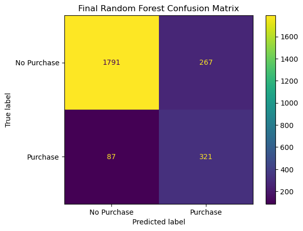

Model Tuning and Results¶
Hyperparameter tuning¶
We tuned the following hyperparameters of the Random Forest classifier:
n_estimators¶
This is the number of trees (models) to include in our forest (ensemble of models). We note that a higher number of trees increases model complexity and can introduce overfitting.
criterion¶
This is the function that is used to measure the quality of a split at a node in the tree. sklearn allows for either gini or entropy functions to be used.
max_depth¶
This is the maximum depth of each tree in the forest. Higher values increase model complexity and can introduce overfitting.
max_features¶
This is the number of features that are considered when making the best split at a node in the tree. We used the following values:
autowhich setsmax_features=sqrt(n_features)log2which setsmax_features=log2(n_features)
min_samples_split¶
This is the minimum number of samples required to split an internal node of the tree.
min_samples_leaf¶
This is the minimum number of samples required to be at a leaf node.
class_weight¶
This hyperparameter can be used to deal with the imbalance in our training data. Specifically, this hyper parameter controls the weights associated with each class. We tested balanced which uses the values of our target label to automatically adjust weights inversely proportional to class frequencies as n_samples / (n_classes * np.bincount(y))
For a full list of hyperparameters please see sk-learn’s documentation.
Randomized search cross validation¶
In order to tune the hyperparameters of our model we used randomized search cross validation. We set a budget of 100 models to train.
Final results (test set)¶
Confusion matrix¶

Classification report¶
| precision | recall | f1-score | support | |
|---|---|---|---|---|
| No Purchase | 0.954 | 0.870 | 0.910 | 2058.000 |
| Purchase | 0.545 | 0.787 | 0.644 | 408.000 |
| accuracy | 0.856 | 0.856 | 0.856 | 0.856 |
| macro avg | 0.749 | 0.828 | 0.777 | 2466.000 |
| weighted avg | 0.886 | 0.856 | 0.866 | 2466.000 |
Discussion of results¶
Our tuned random forest has the following results on the test set:
X true positives, and X true negatives
268 false positives, and 88 false negatives
A macro average recall score is 0.829 and the macro average precision score is 0.750
The macro average precision score is above our budget of 0.60 that we set at the beginning of our project